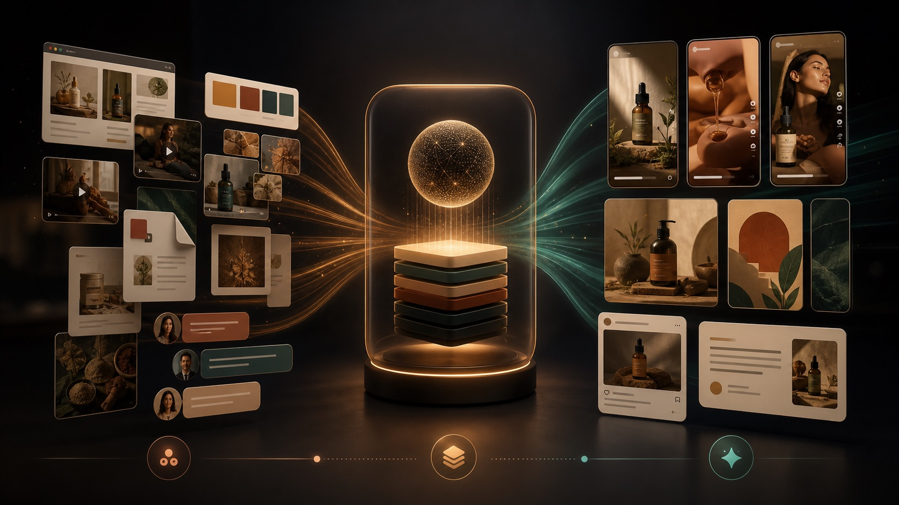

The prompt is hard
Founders know the business, but not the exact words an AI video model needs.
For founders who need better ads, not better prompts
AI can make a video. The hard part is telling it what your brand sells, who it serves, why customers buy, what tone to use, and what business goal the ad must achieve. Kaizen learns that context first, then turns your goals into marketing videos, posters, captions, scripts, and Meta-ready copy.

The real problem
Generic AI tools ask founders to become prompt engineers. You have to explain the product, customer, offer, tone, visual style, platform, and campaign objective again and again.
Kaizen is built to absorb the messy context your business already has, convert it into reusable Brand Memory, and create ads that feel like they came from someone who actually understands the company.
Founders know the business, but not the exact words an AI video model needs.
Pretty videos still fail when they miss the product, buyer, promise, or cultural nuance.
Every tool, freelancer, and campaign needs the same explanation from scratch.
A founder needs customers, repeat purchases, bookings, or launch demand, not random content.
Goal-led campaigns
Kaizen uses your Brand Memory to choose the right angle, hook, offer, product, proof point, video duration, and Meta-ready copy for that goal.
Problem-aware reels, first-purchase offers, founder-led intros, product demos, and trust-building ad copy.
Teasers, benefit-led videos, catalog visuals, announcement captions, and launch-week campaign variants.
Objection-handling scripts, proof-led videos, limited-time offers, and comparison angles for people who almost bought.
Bundle ideas, seasonal reminders, usage stories, loyalty nudges, and upsell creatives.
Clinic, restaurant, salon, and local-service ads with location cues, availability, social proof, and clear CTAs.
Multiple hooks and offers from the same Brand Memory, without briefing the team from zero every week.
What Kaizen generates
Kaizen does the work a strong marketer would do before touching a video tool: choose the customer problem, product angle, proof, offer, hook, scenes, duration, and copy.
Start with the buyer's real problem.
Scene-by-scene reel or video plan.
Made for the product, colors, and style.
Primary text, headline, caption, CTA.
The workflow
Instead of generating ten random ads immediately, Kaizen builds context, creates one sample direction, learns from your feedback, and then scales the campaign with better consistency.
Website, catalog, photos, reels, PDFs, logo, colors, old ads, or simple answers.
Kaizen extracts what you sell, who buys it, how you speak, and what your creative should avoid.
You get one campaign direction with concept, script, visual prompt, caption, and Meta copy.
Give feedback, define quantity and video duration, then generate the batch.
What you can create
Best fit
Where Kaizen goes next
The same Brand Memory and Organization Memory can later power catalog creation, onboarding agents, GTM agents, sales enablement, customer support, and internal knowledge workflows.
Interested?
Send us your website or product category. We will tell you what the first creative workflow could look like.
mamta@seemara.com